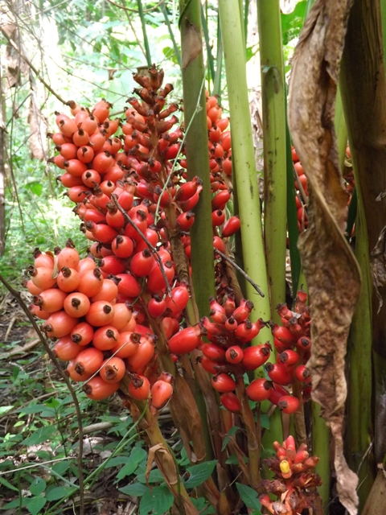
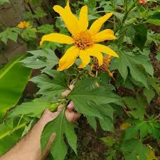
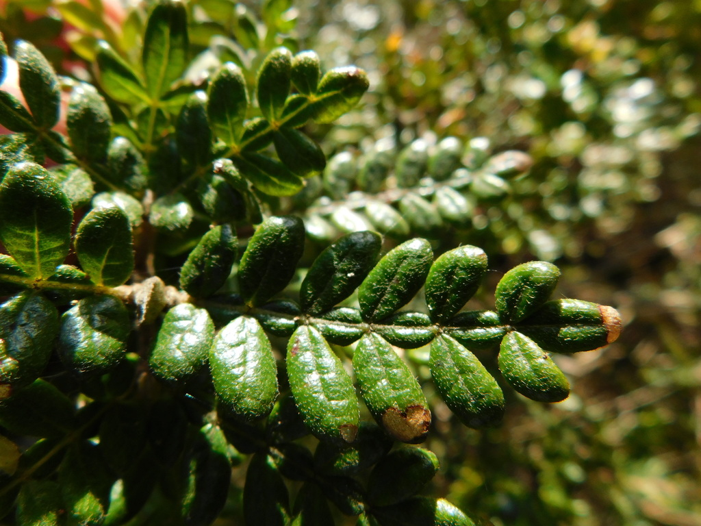
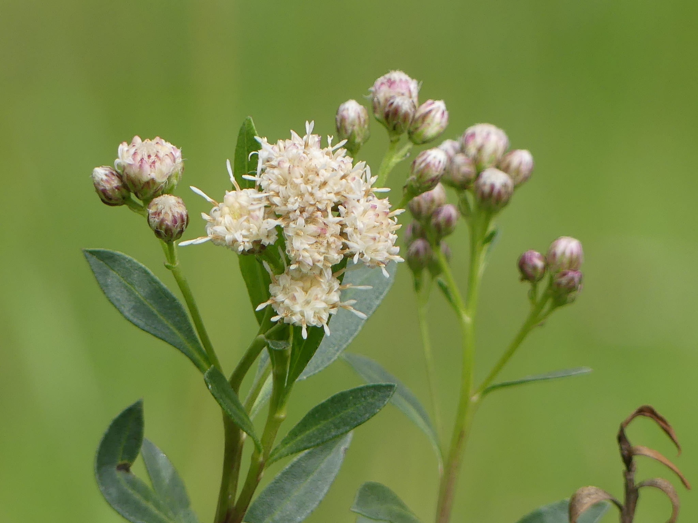
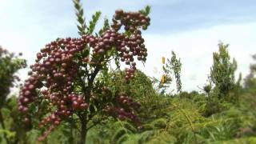
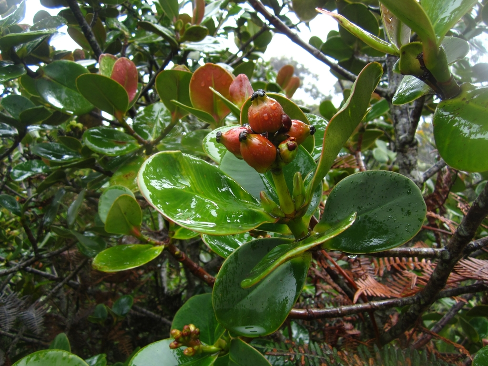

Flora de Cundinamarca
Explora la diversidad de plantas en la región de Cundinamarca.

Más información
Cucharillo (Renealmia alpinia)
- Zona de Crecimiento:Bosques húmedos tropicales.
- Características Especiales:Frutos picantes usados en la cocina local y propiedades medicinales para dolores y fiebres.

Palma de Cera del Quindío (Ceroxylon quindiuense)
- Zona de Crecimiento:Altas montañas andinas.
- Características Especiales:La más alta de las palmas andinas y vital para la conservación del loro orejiamarillo.

Más información
Árnica (Telanthophora grandifolia)
- Zona de Crecimiento:Bosques de montaña.
- Características Especiales:Utilizada tradicionalmente para aliviar el dolor y la inflamación.

Cedro Negro (Juglans neotropica)
- Zona de Crecimiento:Bosques andinos.
- Características Especiales:Madera de alta calidad, utilizada en ebanistería y carpintería fina.

Mano de Oso (Oreopanax floribundum)
- Zona de Crecimiento:Bosques montanos.
- Características Especiales:Hojas grandes en forma de mano, ideal para jardinería ornamental.

Guayacán Amarillo (Tabebuia chrysantha)
- Zona de Crecimiento:Zonas secas interandinas.
- Características Especiales: Floración amarilla espectacular que atrae a turistas y fotógrafos de naturaleza.

Pino Romerón (Podocarpus oleifolius)
- Zona de Crecimiento:Altos Andes.
- Características Especiales:Esencial para la conservación de agua y protección de suelos.

Lengua de Suegra (Sansevieria trifasciata)
- Zona de Crecimiento:Regiones áridas.
- Características Especiales:Purifica el aire y es extremadamente resistente a condiciones de poca luz.

Frailejón (Espeletia spp.)
- Zona de Crecimiento:Páramos andinos.
- Características Especiales:Esencial para la regulación hídrica del páramo, almacena agua en sus rosetas.

Más información
Encenillo (Weinmannia tomentosa)
- Zona de Crecimiento:Bosques de niebla andinos.
- Características Especiales:Madera utilizada en herramientas y carpintería local.

Más información
Carbonero (Baccharis latifolia)
- Zona de Crecimiento:Páramos.
- Características Especiales:Propiedades medicinales en tratamientos de heridas y dolencias

Más información
Mortiño (Vaccinium meridionale)
- Zona de Crecimiento:Bosques montanos.
- Características Especiales:Bayas comestibles con alto contenido antioxidante, usadas en repostería.

Más información
Gaques (Clusia multiflora)
- Zona de Crecimiento:Suelos rocosos y degradados.
- Características Especiales:Resistencia a condiciones extremas, ideal para proyectos de reforestación.
.webp)
Passiflora Caerulea (Pasionaria)
- Zona de Crecimiento:Zonas templadas a cálidas.
- Características Especiales:Flores ornamentales espectaculares y fruto comestible conocido como maracuyá.

Orquídea (Cattleya Trianae)
- Zona de Crecimiento:Predomina en los bosques nublados de Cundinamarca, a elevaciones moderadas.
- Características Especiales:Orquídea nacional de Colombia, destaca por sus flores grandes y coloridas.